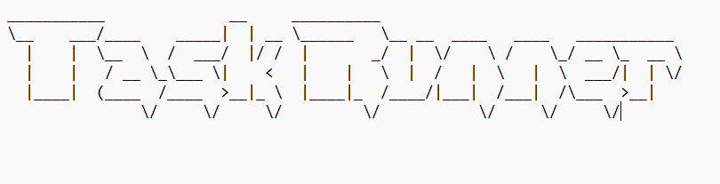

Projects, breaks, active timers, alarms, completion history, and momentum tracking.
taskrunner focus --localv0.9.2 beta

Task Runner
Plan. Focus.
Finish.
A local-first desktop task and focus system. Keep your day in SQLite, run timers without a login, and open encrypted rooms between computers on the same private network.
Local SQLiteYour task database stays here
Encrypted roomsAES-GCM across your LAN
No cloud accountNo Firebase or AI dependency
Host controlStart, probe, diagnose, stop
The desktop build writes to an on-device SQLite database and remains useful without internet.
One computer hosts. Other computers join through the same Wi-Fi or Ethernet network.
Authenticated probes, listener status, peer visibility, request counters, and sanitized reports.
// Local network architecture
A room without a remote server.
Host computer
Start Host
- Opens a private-network listener
- Publishes a local IP and port
- Keeps encrypted room state in memory
- Persists its own tasks in SQLite
Peer computer
Probe + Join
- Uses the host address and room key
- Authenticates with the room password
- Syncs task changes every 1.5 seconds
- Keeps its own local database
// Troubleshoot tools
Know whether the link is real.
$ taskrunner host --statusListener telemetry
See whether the host core is listening, which TCP port it owns, and how many authenticated requests it has handled.
$ taskrunner probe 192.168.x.xAuthenticated probe
Test the room key, password, network route, and response time before attempting a full join.
$ taskrunner report --safeSanitized report
Copy useful diagnostics while automatically excluding the password, password proof, and encrypted task payload.
// Windows desktop public beta
Momentum starts here.
Built with Tauri 2 for Windows 10/11. Your application database remains local, and the private desktop source is not included in this public download repository.